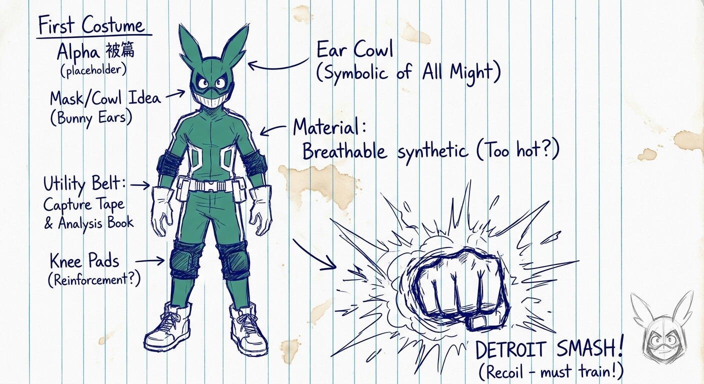
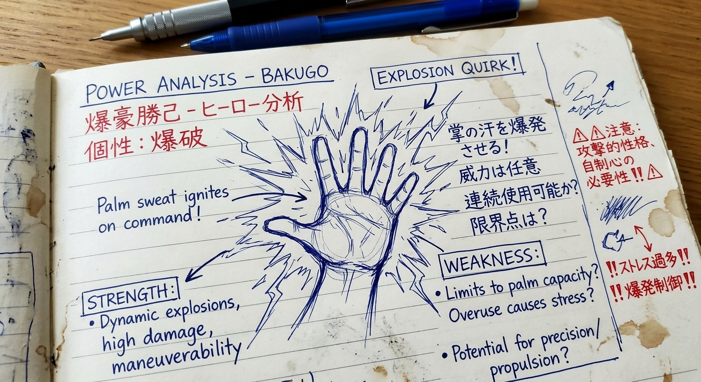
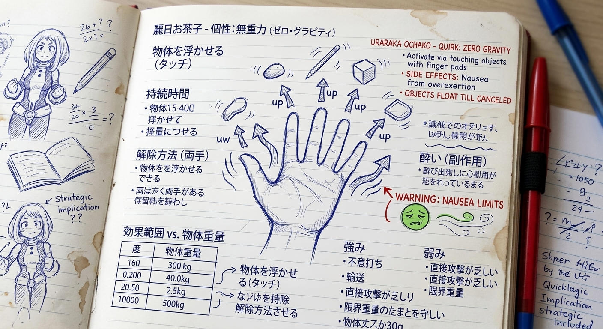
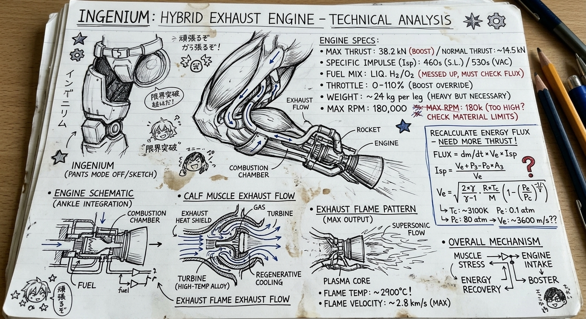

Costume Alpha (Concept)
Subject: First-generation personal hero suit design. Initial blueprint drafted post-middle school acceptance. Focus: Maximum joint mobility, kinetic recoil distribution, and psychological intimidation via All Might-inspired silhouette motifs.
Structural Notes & Revisions:
- Cowl / Headgear: Integrated ear-coph antennas must house local frequency comms, but watch out for wind-shear drag at high speeds. Rabbit-ear aesthetic is non-negotiable (homage), though material must be lightweight carbon-mesh.
- Torso & Padding: High-density breathable synthetic fabric. Crucial for preventing heat stroke during prolonged combat maneuvers. Must include reinforced chest plating to absorb blunt-force trauma.
- Gauntlets & Knees: Shock-absorbing shock pads required on joint pivots. If I overshoot muscle output capacity, these pads act as the first line of defense against bone fractures before full quirk mastery! Plus Ultra!!



Quirk: Explosion (爆破)
Tactical Breakdown: Palmar sweat glands secrete a nitroglycerin-like substance that ignites on command. High blast pressure creates massive kinetic force used for both offense and high-speed aerial maneuvering.
- Weakness/Limit: Palm capacity limits under cold weather; strain on wrist joints during max-output explosions.
- Combat Application: Stun Grenade, Howitzer Impact, mid-air recoil vectoring.

Quirk: Zero Gravity (無重力)
Tactical Breakdown: Contact pads on fingertips negate gravitational pull on touched objects. Releasing the effect requires touching finger pads together ("Release").
- Weakness/Limit: Weight capacity threshold (~3 tons); exceeding limits induces extreme nausea/vestibular overload.
- Combat Application: Debris levitation, tactical mobility support, Home Run Comet synergy.

Quirk: Engine (エンジン)
Tactical Breakdown: Organic jet engine tubes integrated into calf muscles fueled by orange juice intake. High-speed propulsion and gear-shifting capabilities.
- Weakness/Limit: Engine stalling if vents are clogged or overheated; maximum speed burst limit (Recipro Burst).
- Combat Application: Recipro Burst, Torque Overdrive, high-speed rescue extraction.

Quirk: Half-Cold Half-Hot (半冷半燃)
Tactical Breakdown: Right side generates extreme freezing temperatures and ice formations; left side ignites intense flames. Perfect dual-element equilibrium when used in tandem to regulate body temperature.
- Weakness/Limit: Prolonged single-side overuse causes frostbite or heat exhaustion; thermal regulation is mandatory for peak output.
- Combat Application: Large-scale battlefield control, high-density thermal shocks (Flashfire Fist, Great Glacial Aegir).